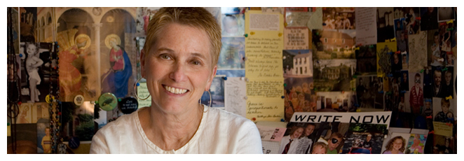

An American Tune
Discussion questions | The Story Behind the Story | PURCHASE
 While reluctantly accompanying her husband and daughter to freshman orientation at Indiana University, Nora Quillen hears someone call her name, a name she has not heard in more than 25 years. Not even her husband knows that back in the 60s she was Jane Barth, a student deeply involved in the antiwar movement.
While reluctantly accompanying her husband and daughter to freshman orientation at Indiana University, Nora Quillen hears someone call her name, a name she has not heard in more than 25 years. Not even her husband knows that back in the 60s she was Jane Barth, a student deeply involved in the antiwar movement.
An American Tune moves back and forth in time, telling the story of Jane, a girl from a working-class family who fled town after she was complicit in a deadly bombing, and Nora, the woman she became, a wife and mother living a quiet life in northern Michigan. An achingly poignant account of a family crushed under the weight of suppressed truths, An American Tune illuminates the irrevocability of our choices and how those choices come to compose the tune of our lives.
From the Novel...
Yesterday afternoon, checking into the dorm where parents who had accompanied their children for orientation were staying, she’d been, momentarily, a college freshman herself saying goodbye to her own parents and her little sisters on the day they dropped her off for college, more than thirty-five years before. She could almost hear the stereos cranked up along the corridor, as they had been on that long-ago day. The Beatles, the Beach Boys, the Byrds. The Rolling Stones, inciting them to rebellion. When all her belongings had been unloaded, she’d stood with her family, watching the elevator light blink each floor on its way up, feeling like a can of Coke shaken up hard. Finally, the door opened. Did they hug? Speak? They must have. But all she could remember now was how, suddenly, they were gone. And herself flying back to her room, her arms wheeling, her soul rising, wild and joyous. Thinking, anything can happen to me now. Absolutely anything.
Praise for An American Tune
"An American Tune is about the '60's but it's about now, too. It's about a mother finding herself in her daughter, for better and for worse, and it's about generations of women forever realizing that even though we try our best to prevent them, our children were born to make their own mistakes. Nora will become your honest-to-God best friend because she reminds us of where we've been, what we're doing, and what we are looking for."
—Margaret McMullan, author of In My Mother's House and When Warhol Was Still Alive
"Barbara Shoup has written a rich and timely story about one generation's outrage and the long reverberations of secrets. Her plot has much to say about the tangle of responsibility and how an ill-advised war disrupts an intricate network of ordinary American lives. A striking and memorable novel warm, sage, and beautifully written."
—Joan Silber, National Book Award finalist for Ideas of Heaven: A Ring of Stories, and author of four other books of fiction: Lucky Us, In My Other Life, In the City, and Household Words
"I love An American Tune by Barbara Shoup! She's a wonderful writer with an amazing story to tell to those of us who have been fumbling along trying to gain perspective on a signal moment in our own history. Hers is the first account, in my opinion, that understands the combination of the extraordinary and the banal that characterized the antiwar movement, and yet she's never didactic. The extraordinary and the banal coexist in the seminal moments of any generation, of course, but to those of us who became adults during the Vietnam War years it is still surprising to remember over and over again how self-absorbed, how trivial we were while also making profound decisions."
—Robb Forman Dew, author of the novels Dale Loves Sophie to Death, The Time of Her Life, and Fortunate Lives, as well as a memoir, The Family Heart
"It's an ordinary day until a man calls your name, a man from the life you've tried your best to leave behind. Suddenly, anything can happen. Such is the case in Barbara Shoup's engaging new novel, An American Tune. A story that comes from the heartland and from the heart. I cared about these characters as if they were my own family members. What a moving story of what it is to long for the person you once were, set against the backdrop of political unrest both then and now."
—Lee Martin, author of Break the Skin and The Bright Forever
"Barbara Shoup's An American Tune is an elegant, moving, finely written page-turner that reaffirms and makes fresh again Faulkner's assertion that the past is never dead; it's not even past."
—Will Allison, Author of Long Drive Home
"An American Tune kept me on the edge of my seat while at the same time wanting to savor the evocative, memorable and true sentences along with way. Barbara Shoup's exasperating yet loveable characters felt so real that I longed to lure them into my kitchen for a cup of coffee so I could spend more time with them. Shoup brings the Sixties back to life with wry humor and sympathy, reminding us all the while that we have never left its shadow. A haunting, powerful book. I loved it."
—Elizabeth Stuckey-French, author of The Revenge of the Radioactive Lady
"The story of Jane and Nora—and what happens when these two lives converge—held me in great suspense. This highly readable novel isn't afraid to talk liberal politics during wartime, nor is it afraid to tell an epic love story. I loved everything about Barbara Shoup's An American Tune."
—Cathy Day, author of The Circus in Winter
BARBARA'S BLOG
Read thoughts on books, authorship, teaching, and life on Barbara's blog.
MORE WORK

Browse Barbara's books or read her essays.
CONTACT
Donec id elit non mi porta gravida at eget metus. Fusce dapibus, tellus ac cursus commodo, tortor mauris condimentum nibh, ut fermentum massa justo sit amet risus. Etiam porta sem malesuada magna mollis euismod. Donec sed odio dui.
© Barbara Shoup 2012